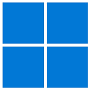

Istnieje kilka wspieranych wersji, ale najnowszą jest windows 11. Najpopularniejszą jest jeszcze windows 10 z 2016r.
Jego popularność powoduje że na windowsa jest wiele programów.
Istnieje też wersja windowsa przeznaczona na serwery. Jest to "Windows server". Najnowszą stabilną wersją jest Windows server 2019, a najnowszą powstającą jest Windows server 2022.
